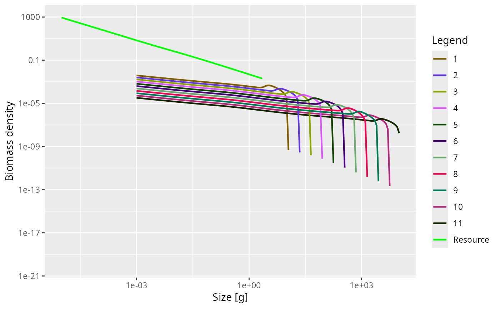

Set up parameters for a trait-based multispecies model
Source:R/wrapper_functions.R
newTraitParams.RdThis functions creates a MizerParams object describing a trait-based
model. This is a simplification of the general size-based model used in
mizer in which the species-specific parameters are the same for all
species, except for the maximum size, which is considered the most
important trait characterizing a species. Other parameters are related to the
maximum size. For example, the size at maturity is given by w_max *
eta, where eta is the same for all species. For the trait-based model
the number of species is not important. For applications of the trait-based
model see Andersen & Pedersen (2010). See the mizer website for more
details and examples of the trait-based model.
Usage
newTraitParams(
no_sp = 11,
min_w_max = 10,
max_w_max = 10^4,
min_w = 10^(-3),
max_w = max_w_max,
eta = 10^(-0.6),
min_w_mat = min_w_max * eta,
no_w = round(log10(max_w_max/min_w) * 20 + 1),
min_w_pp = 1e-10,
w_pp_cutoff = min_w_mat,
n = 2/3,
p = n,
lambda = 2.05,
r_pp = 0.1,
kappa = 0.005,
alpha = 0.4,
h = 40,
beta = 100,
sigma = 1.3,
f0 = 0.6,
fc = 0.25,
ks = NA,
gamma = NA,
ext_mort_prop = 0,
reproduction_level = 1/4,
R_factor = deprecated(),
gear_names = "knife_edge_gear",
knife_edge_size = 1000,
egg_size_scaling = FALSE,
resource_scaling = FALSE,
perfect_scaling = FALSE,
min_w_inf = deprecated(),
max_w_inf = deprecated()
)Arguments
- no_sp
The number of species in the model.
- min_w_max
The maximum size of the smallest species in the community. This will be rounded to lie on a grid point.
- max_w_max
The maximum size of the largest species in the community. This will be rounded to lie on a grid point.
- min_w
The size of the the egg of the smallest species. This also defines the start of the community size spectrum.
- max_w
The largest size in the model. By default this is set to the largest maximum size
max_w_max. Setting it to something larger only makes sense if you plan to add larger species to the model later.- eta
Ratio between maturity size and maximum size of a species. Ignored if
min_w_matis supplied. Default is 10^(-0.6), approximately 1/4.- min_w_mat
The maturity size of the smallest species. Default value is
eta * min_w_max. This will be rounded to lie on a grid point.- no_w
The number of size bins in the community spectrum. These bins will be equally spaced on a logarithmic scale. Default value is such that there are 20 bins for each factor of 10 in weight.
- min_w_pp
The smallest size of the resource spectrum. By default this is set to the smallest value at which any of the consumers can feed.
- w_pp_cutoff
The largest size of the resource spectrum. Default value is min_w_max unless
perfect_scaling = TRUEwhen it is Inf.- n
Scaling exponent of the maximum intake rate.
- p
Scaling exponent of the standard metabolic rate. By default this is equal to the exponent
n.- lambda
Exponent of the abundance power law.
- r_pp
Growth rate parameter for the resource spectrum.
- kappa
Coefficient in abundance power law.
- alpha
The assimilation efficiency.
- h
Maximum food intake rate.
- beta
Preferred predator prey mass ratio.
- sigma
Width of prey size preference.
- f0
Expected average feeding level. Used to set
gamma, the coefficient in the search rate. Ignored ifgammais given explicitly.- fc
Critical feeding level. Used to determine
ksif it is not given explicitly.- ks
Standard metabolism coefficient. If not provided, default will be calculated from critical feeding level argument
fc.- gamma
Volumetric search rate. If not provided, default is determined by
get_gamma_default()using the value off0.- ext_mort_prop
The proportion of the total mortality that comes from external mortality, i.e., from sources not explicitly modelled. A number in the interval [0, 1).
- reproduction_level
A number between 0 an 1 that determines the level of density dependence in reproduction, see
setBevertonHolt().- R_factor
![[Deprecated]](figures/lifecycle-deprecated.svg) Use
Use
reproduction_level = 1 / R_factorinstead.- gear_names
The names of the fishing gears for each species. A character vector, the same length as the number of species.
- knife_edge_size
The minimum size at which the gear or gears select fish. A single value for each gear or a vector with one value for each gear.
- egg_size_scaling
![[Experimental]](figures/lifecycle-experimental.svg) If TRUE, the egg size is a constant fraction of the
maximum size of each species. This fraction is
If TRUE, the egg size is a constant fraction of the
maximum size of each species. This fraction is min_w / min_w_max. If FALSE, all species have the egg sizew_min.- resource_scaling
-
If TRUE, the carrying capacity for larger resource
is reduced to compensate for the fact that fish eggs and larvae are
present in the same size range.
- perfect_scaling
-
If TRUE then parameters are set so that the community
abundance, growth before reproduction and death are perfect power laws. In
particular all other scaling corrections are turned on.
- min_w_inf
- The argument has been
renamed to
min_w_maxto make it clearer that it refers to the maximum size of a species not the von Bertalanffy asymptotic size parameter. - max_w_inf
- The argument has been
renamed to
max_w_max.
Details
The function has many arguments, all of which have default values. Of particular interest to the user are the number of species in the model and the minimum and maximum sizes.
The characteristic weights of the smallest species are defined by
min_w (egg size), min_w_mat (maturity size) and
min_w_max (maximum size). The maximum sizes of
the no_sp species
are logarithmically evenly spaced, ranging from min_w_max to
max_w_max.
Similarly the maturity sizes of the species are logarithmically evenly
spaced, so that the ratio eta between maturity size and maximum
size is the same for all species. If egg_size_scaling = TRUE then also
the ratio between maximum size and egg size is the same for all species.
Otherwise all species have the same egg size.
In addition to setting up the parameters, this function also sets up an initial condition that is close to steady state.
The search rate coefficient gamma is calculated using the expected
feeding level, f0.
The option of including fishing is given, but the steady state may loose its
natural stability if too much fishing is included. In such a case the user
may wish to include stabilising effects (like reproduction_level) to ensure
the steady state is stable. Fishing selectivity is modelled as a knife-edge
function with one parameter, knife_edge_size, which is the size at which
species are selected. Each species can either be fished by the same gear
(knife_edge_size has a length of 1) or by a different gear (the length of
knife_edge_size has the same length as the number of species and the order
of selectivity size is that of the maximum size).
The resulting MizerParams object can be projected forward using
project() like any other MizerParams object. When projecting
the model it may be necessary to reduce dt below 0.1 to avoid any
instabilities with the solver. You can check this by plotting the biomass or
abundance through time after the projection.
See also
Other functions for setting up models:
newCommunityParams(),
newMultispeciesParams(),
newSingleSpeciesParams()
Examples
params <- newTraitParams()
sim <- project(params, t_max = 5, effort = 0)
plotSpectra(sim)
